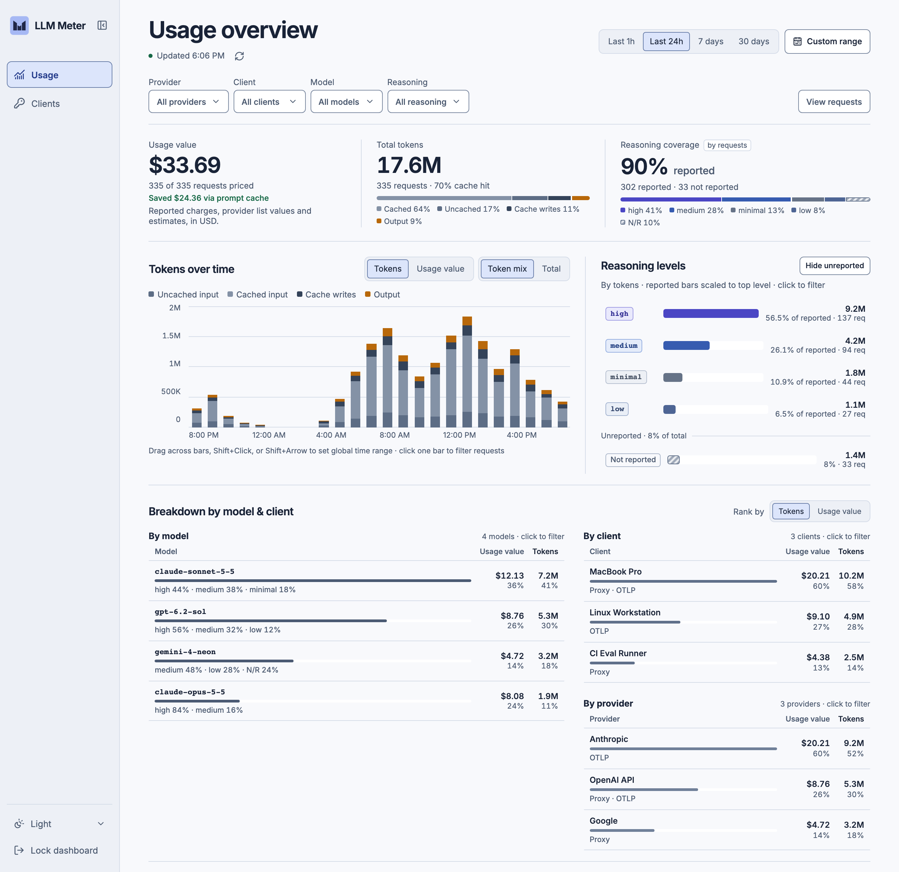

One meter for every model you run.
Self-hosted token, prompt cache, reasoning-level, and USD spend tracking across Claude Code, Codex, Gemini CLI, GitHub Copilot CLI, OpenCode, OpenAI-compatible SDKs, and signed-in Antigravity.
export DASHBOARD_TOKEN="$(openssl rand -hex 32)"
echo "Dashboard token: $DASHBOARD_TOKEN"
docker run --rm -p 127.0.0.1:8080:8080 \
-e DASHBOARD_TOKEN -e COOKIE_SECURE=false \
-v llm-meter-data:/data \
ghcr.io/mishankov/llm-meter:latest

Self-host in two steps.
Start the server with a single container or Go binary, create a client key in Clients, and point your tools at it.
Start the server
export DASHBOARD_TOKEN="$(openssl rand -hex 32)"
echo "Dashboard token: $DASHBOARD_TOKEN"
docker run --rm -p 127.0.0.1:8080:8080 \
-e DASHBOARD_TOKEN -e COOKIE_SECURE=false \
-v llm-meter-data:/data \
ghcr.io/mishankov/llm-meter:latestservices:
llm-meter:
image: ghcr.io/mishankov/llm-meter:latest
restart: unless-stopped
ports:
- "127.0.0.1:8080:8080"
environment:
DASHBOARD_TOKEN: ${DASHBOARD_TOKEN:?set DASHBOARD_TOKEN in .env}
COOKIE_SECURE: "true"
volumes:
- llm-meter-data:/data
volumes:
llm-meter-data:go install github.com/mishankov/llm-meter@latest
export DASHBOARD_TOKEN="$(openssl rand -hex 32)"
echo "Dashboard token: $DASHBOARD_TOKEN"
LISTEN_ADDR=127.0.0.1:8080 COOKIE_SECURE=false \
DATA_DIR=./data llm-meter
Open http://localhost:8080, unlock with DASHBOARD_TOKEN, then open Clients to issue a client key (llmm_...).
Connect your tools
export CLAUDE_CODE_ENABLE_TELEMETRY=1
export OTEL_LOGS_EXPORTER=otlp
export OTEL_METRICS_EXPORTER=none OTEL_TRACES_EXPORTER=none
export OTEL_EXPORTER_OTLP_LOGS_PROTOCOL=http/protobuf
export OTEL_EXPORTER_OTLP_LOGS_ENDPOINT=http://localhost:8080/otlp/v1/logs
export OTEL_EXPORTER_OTLP_HEADERS="X-LLM-Meter-Key=<your-key>"
export OTEL_LOG_USER_PROMPTS=0 OTEL_LOG_ASSISTANT_RESPONSES=0
claude[otel]
log_user_prompt = false
log_agent_responses = false
log_sse_deltas = false
[otel.exporter."otlp-http"]
endpoint = "http://localhost:8080/otlp/v1/logs"
protocol = "json"
[otel.exporter."otlp-http".headers]
"X-LLM-Meter-Key" = "${LLM_METER_KEY}"OTEL_EXPORTER_OTLP_ENDPOINT=http://localhost:8080/otlp \
OTEL_EXPORTER_OTLP_HEADERS="X-LLM-Meter-Key=<your-key>" \
opencode --standalone# With llm-meter-relay or the macOS menu bar app running locally:
antigravity acp \
--cloud_code_endpoint http://127.0.0.1:8765/antigravityAlso supports Gemini CLI, GitHub Copilot CLI, generic OpenAI-compatible SDKs/CLIs, and the local relay. See all snippets in the Configuration Guide.
Keep every token on your own ledger.
Open-source, self-hosted, and ready to run in Docker or natively on Linux and macOS.